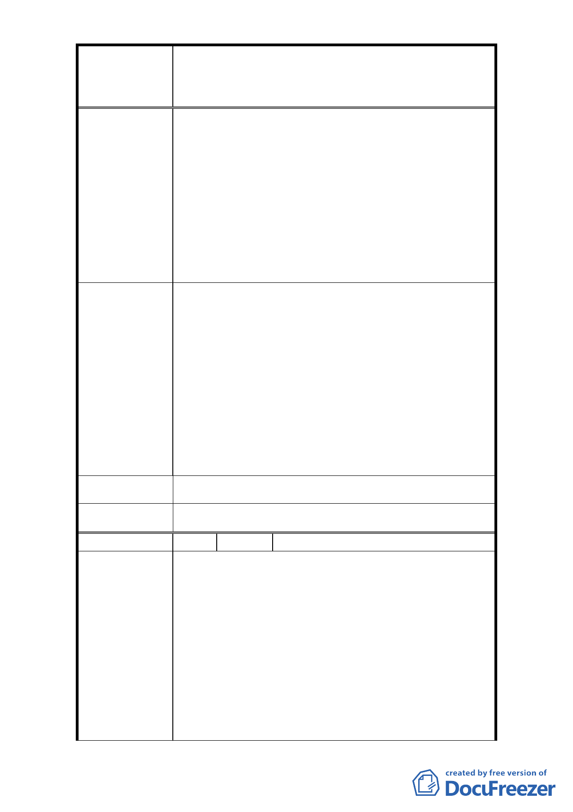

修訂臺北市大安區青田街保存區聚落風貌保存專用區細部計
案
名
畫、變更部分第三種住宅區、第三種商業區(特)為第三種住宅區
(特)(日式宿舍)及第三種商業區(特)(日式宿舍)暨劃定週邊地
區都市設計管制細部計畫案
2. (1)青田街 9 巷 5 號台大日式宿舍並非古蹟。(2)本
區建蔽率只有 45%不符公義。(3)本區開挖率只有
60%，不利都更。
3. (1)本區住三土地建蔽率為 45%。惟因鄰近日式宿舍
聚落保存區，為維持其風貌，可能含限制開放規模
及高度。(2)建蔽率：因古蹟限建取消停獎及容積移
轉，即使現在還原住三作業程序也趕不及（停獎 102
年 12 月 31 日取消）。(3)開挖率：教會百分之百開
挖(斜對面已興建之教會)。
1. (1)請 貴都市計畫委員會比照辦理，放寬本區建蔽
率為 50%、容積率為 225%，以符合公平正義。(2)為
維護本區日式宿舍聚落景觀建議開挖率放寬為
70%，以利都更時能順利興建地下停車場。
2. (1)建議刪除保護並進行都更以維持整體街道外觀-
建 議 辦 法 其宿舍隔壁已建有台大新建宿舍。(2)請放寬為建蔽
率 50%才可能進行都更。(3)開挖率請放寬為 70%。
3. (1)放寬建蔽率於 5%為 50%，有效控制建物之風貌，
不致影響原日式住宅區專用區之建築風貌。(2)放寬
容積率 20%。(3)比照教會辦法處理 100%為主。
市 府 回 覆 意 見 同編號 10 回覆意見。
委 員 會 決 議 同編號 10 決議。
編 號 20 陳情人 黃于容
建議地點：大安區金華段二小段 83 地號。
1. 細部計畫以下 2 項內容，未考慮到里民之權益：
(1)公有財留設側院，其寬度不得小於「1 公尺」；私
有財留設側院，其寬度不得小於「2 公尺」。
陳 情 理 由 (2)公有財圍牆色彩，以國際標準色系 HV/C=7.5-10YR
8.5/1 設置為「原則」；私有財圍牆色彩，以國際
標準色系 HV/C=7.5-10YR 8.5/1 設置「為限」。
2. 細部計畫無補償方案，明顯違憲：依 85.04.12.釋
字第 400 號（節錄），憲法第 15 條關於人民財產權
- 21 -